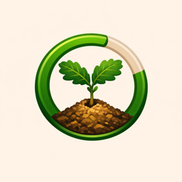

Privacy Policy
Effective 25 November 2026 · Updated 25 November 2026
- Everything you enter stays on your iPhone. We have no servers and never receive your entries.
- No account, no ads, no analytics and no tracking.
- Backups and exports only leave your phone when you choose where to save or send them.
- Purchases go through Apple; RevenueCat helps us check whether you have Plus.
This policy explains how Sober Tracker (also listed on the App Store as "Sober Tracker & Counter", "the app", "we", "us") handles information. Sober Tracker helps you track time without alcohol, cravings, moods and habits. Because this is personal, health-related information, the app is built so that it never leaves your device unless you send it somewhere yourself.
1. Information you enter
Depending on the features you use, the app stores:
- The name or nickname you choose, and the date your journey started
- Your past drinking habits (drinks per week, what you drank, cost per drink and currency), used to calculate money, drinks and calories saved
- Days you mark as sober, a lapse or a relapse, with any triggers or notes you add
- Check-ins and journal entries: mood, feelings, sleep, gratitude and notes
- Cravings you log: time, intensity, triggers and what helped
- Your reasons for quitting, daily habits, weight entries and letters to your future self
- Garden, path, badges and app settings (for example theme, reminders and which cards show on Home)
All of this is stored only in the app's storage on your iPhone. A small summary (such as your day count and savings) is shared with the app's own Home Screen widgets through storage on the same device. We do not collect, upload or have access to any of it.
2. Backups, exports and sharing
Because there is no account, nothing is saved online by us. You can choose to:
- Back up your data to a file and save it wherever you choose with the iOS share sheet (for example iCloud Drive or the Files app), then restore it on a new iPhone.
- Export your data as a CSV file.
- Share a progress poster or your path as an image.
These files go only where you send them, and are then handled under the terms of that service (for example Apple for iCloud Drive). Your app data may also be included in your own iCloud or computer backups of your iPhone, which are controlled by Apple and you.
3. Notifications
If you allow notifications, reminders (for example your daily check-in or a sealed letter becoming ready) are scheduled on your iPhone. They are not sent from a server. You can turn them off in the app or in iOS Settings › Notifications.
4. Purchases
Sober Tracker Plus is sold through Apple's App Store as a weekly subscription or a one-time lifetime purchase. Apple processes your payment; we never see your name, payment card or Apple Account details.
We use RevenueCat to check whether you have an active subscription or lifetime purchase. To do this, RevenueCat receives a random anonymous identifier created by the app, your purchase and subscription history from Apple, and basic technical information such as your device model, iOS version, app version, country/region and IP address. This information is used only to provide and restore your purchases and to understand how Plus is doing (for example, how many people subscribe). It is not used for advertising, and it is never combined with what you enter in the app: your entries, moods, cravings and drinking history are not sent to RevenueCat. You can manage or cancel a subscription in iOS Settings › your name › Subscriptions.
5. Ratings and support emails
The app may show Apple's standard rating prompt. Apple handles any rating or review you leave. If you contact us from the app, your email app opens with a message addressed to us. Nothing is sent unless you press Send. We use your email only to reply to you, and delete it when it is no longer needed.
6. Links to other services
The app links to outside services such as findahelpline.com, phone helplines and the App Store. When you open one, that service's own privacy policy applies.
7. What we don't do
- We don't show ads or use advertising identifiers.
- We don't use analytics or crash-reporting services. The only third-party code in the app is RevenueCat, for purchases (see section 4).
- We don't sell, rent or share personal information, and we don't track you across other apps or websites.
- We don't read from or write to Apple Health.
8. Health and safety
9. Children
Sober Tracker is intended for adults. It is not directed at children under 13, and we do not knowingly collect personal information from anyone, including children.
10. Your choices and rights
You can view, edit and delete your entries in the app. Settings › Delete all data erases everything from your iPhone, and deleting the app does the same. Depending on where you live (for example under the GDPR in the EU/UK or the CCPA in California), you may have rights to access or delete personal information about you. Your app entries never leave your device, so those requests are met on your device. To make a request about the purchase data RevenueCat holds for you, email us and we will help.
11. Changes to this policy
If we change this policy, we will update this page and the effective date above. Significant changes will be noted in the app's release notes.
12. Contact
Email: drexplod@gmail.com